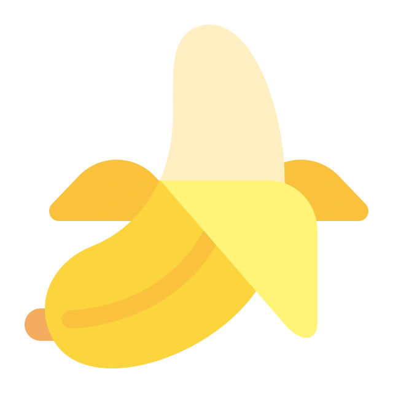

工具矩阵
每个环节对应的最优 AI 工具
自研脚本
ChatGPT

nanobanana
Claude Code
Kimi Code
品牌联名创意提案，传统方式要创意总监+设计师+运营多方协作，反复改稿反复对齐，2 周起步。我搭了一套 五步标准化管线：Brand Board 锁死品牌调性，AI 做发散和执行，人只拍板方向。创意周期从 2 周压到 2 天，六平台素材一键适配。
品牌联名创意提案重度依赖人工协作——创意总监定方向、设计师出图、运营适配平台，沟通成本高，改一版动全身。一个人做不了，因为没调性锚点——每轮反馈都可能跑偏，项目周期被反复拉长。
人定方向，AI 做执行。把一次联名创意的经验，拆成情报收集 → Brand Board → 概念发散 → 批量出图 → 提案交付五个独立步骤，每一步可独立迭代、跨品牌复用。
定向收集 3-5 张心动参考图，研究同类联名案例，建立视觉基准库。
拆解品牌五维度视觉基准：色彩、字体、构图、情绪、元素。用 Brand Board 锁死调性，批量生产不跑偏。
AI 输出 3-5 个差异化概念方向，人判断选择最优。每个方向附视觉 mood board + 文案方向 + 平台适配建议。
选定概念后，按 Brand Board 约束批量生成六平台素材。自动化脚本处理尺寸适配和输出格式。
自动生成提案 Deck（品牌拆解 + 概念视觉 + 六平台素材），可直接用于客户提案。
从品牌解构到六平台交付，一人 2 天跑完全案。核心概念「大人的童心」，主色调 Starbucks Green + Molly 湖绿。
生成「盲盒咖啡师」「第三空间惊喜角」「联名限定杯」三个方向，人锁定 A 方向。AI 发散，人收敛。
Brand Board 覆盖五维度，确保 13+ 张素材跨六平台调性一致。没有它，批量生产必然跑偏。
自研脚本一键完成六平台尺寸适配和批量重命名。微信 2.35:1、抖音 9:16、小红书 3:4 等精确尺寸零手工。
传统品牌创意依赖创意总监+设计师+运营多人协作。这套方法把全流程压缩为一人可执行的五步标准化闭环。
每个环节对应的最优 AI 工具

"Brand Board 的作用不是替代你的审美判断，而是把判断写成规则。规则定了，机器才知道你要什么。"